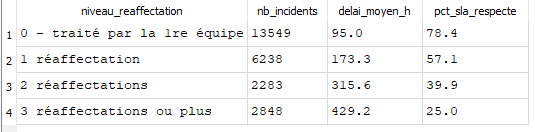

DU Data Analytics, Paris 1 Panthéon-Sorbonne
Piloter les incidents informatiques d'une DSI avec SQL
- Question
- Comment passer d'un journal brut d'outil de ticketing à des indicateurs qui aident une équipe IT à prioriser ?
- Données
- Journal réel et anonymisé d'une instance ServiceNow : 141 712 événements pour 24 918 incidents.
- Méthode
- Conversion des dates, gestion des valeurs manquantes, table de quarantaine, neuf contrôles de cohérence dans une vue rejouable, indicateurs de délai et de SLA.
63,4 % des SLA respectés, une médiane de 22 h contre une moyenne de 178 h, et un levier clair : limiter les réaffectations entre équipes.
- SQL
- SQLite
- Contrôle qualité
- Indicateurs
